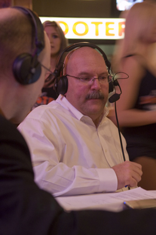

Inner text: 


    David Aldridge's NBA.com off-season evaluation of the Hornets drew some  unhappy commentary from our readers. 
Like the comments, I'm not really a fan of his take on the Hornets, but
there were a couple lines in there that made me grin:

GM Jeff Bower keeps his own counsel . . . Quiet, but good. That's Bower.


Yes. That's Jeff Bower.  Over the last four years, there has
been one truth about Bower:  He doesn't say much - or leak
anything.  When Bower signed Peja, there were no pundits who were
predicting it.  Bower traded for Chandler, and there wasn't any
speculation of Chandler to the Hornets before it happened.  Bower
signed West to an extension - and the media hadn't even reported
negotations were ongoing.  Bower traded Mike James for Antonio
Daniels and moved Chandler for Okafor, and the media had the story only
a very brief time before the move happened.  According to Bower,
he had been exploring the Okafor trade for weeks with Charlotte, as
every major news outlet could only re-iterate how inactive he was, and
how the poor Hornets fans could only expect their team to fall apart
and Paul to move on.

I tried to think of some trades or transactions that could have
happened or did happen that had some fanfare and leaks around them -
and the only one I could think of was the potential Chandler for Ben
Wallace trade.  Everyone was reporting that - but then, Phoenix's
front office has more leaks than the Titanic.  There was some
information out there prior to the Morris Peterson signing, but that
was because Utah was pursuing Peterson as well.  That's about it.
Bower just doesn't say much.  You listen to one of his
interviews, and he generally says what he wants to say in the first
minute.  After that, you'll get nothing out of him.  His
answers will be neutral, generally uninformative, somewhat evasive, and
will never, ever, hint at his future plans. 
As a blogger, speculating about the Hornet's future moves, that can
be rough.  As an avid fan, hoping and wanting the Hornets to do
something, anything earlier this summer, that was
rough.  However, as someone who wants the Hornets to do well, I
love it.  A man who can keep his mouth shut about a big deal while
the media excoriates him? A man who never tips his hand to
anyone?  That's good stuff.
What do you guys think?
  


Formatted text: 
David Aldridge's NBA.com off-season evaluation of the Hornets drew some unhappy commentary from our readers.
Like the comments, I'm not really a fan of his take on the Hornets, but

there were a couple lines in there that made me grin:


GM Jeff Bower keeps his own counsel . . . Quiet, but good. That's Bower.


Yes. That's Jeff Bower. Over the last four years, there has

been one truth about Bower: He doesn't say much - or leak

anything. When Bower signed Peja, there were no pundits who were

predicting it. Bower traded for Chandler, and there wasn't any

speculation of Chandler to the Hornets before it happened. Bower

signed West to an extension - and the media hadn't even reported

negotations were ongoing. Bower traded Mike James for Antonio

Daniels and moved Chandler for Okafor, and the media had the story only

a very brief time before the move happened. According to Bower,

he had been exploring the Okafor trade for weeks with Charlotte, as

every major news outlet could only re-iterate how inactive he was, and

how the poor Hornets fans could only expect their team to fall apart

and Paul to move on.


I tried to think of some trades or transactions that could have

happened or did happen that had some fanfare and leaks around them -

and the only one I could think of was the potential Chandler for Ben

Wallace trade. Everyone was reporting that - but then, Phoenix's

front office has more leaks than the Titanic. There was some

information out there prior to the Morris Peterson signing, but that

was because Utah was pursuing Peterson as well. That's about it.

Bower just doesn't say much. You listen to one of his

interviews, and he generally says what he wants to say in the first

minute. After that, you'll get nothing out of him. His

answers will be neutral, generally uninformative, somewhat evasive, and

will never, ever, hint at his future plans.

As a blogger, speculating about the Hornet's future moves, that can

be rough. As an avid fan, hoping and wanting the Hornets to do

something, anything earlier this summer, that was

rough. However, as someone who wants the Hornets to do well, I

love it. A man who can keep his mouth shut about a big deal while

the media excoriates him? A man who never tips his hand to

anyone? That's good stuff.

What do you guys think?

  


HTML: 

<div class="post-content">
    <p>David Aldridge's NBA.com o<a href="http://www.hornets247.com/news/lagniappe/2009/08/07/nbacoms-offseason-anlysis-hornets-among-the-dreamers">ff-season evaluation of the Hornets</a> drew some&nbsp; unhappy c<a href="http://www.hornets247.com/news/lagniappe/2009/08/07/nbacoms-offseason-anlysis-hornets-among-the-dreamers#comments">ommentary from our readers</a>.&nbsp;
Like the comments, I'm not really a fan of his take on the Hornets, but
there were a couple lines in there that made me grin:</p>
<blockquote>
<p>GM Jeff Bower keeps his own counsel . . . Quiet, but good. That's Bower.</p>
</blockquote>
<p></p>
<p>Yes. That's Jeff Bower.&nbsp; Over the last four years, there has
been one truth about Bower:&nbsp; He doesn't say much - or leak
anything.&nbsp; When Bower signed Peja, there were no pundits who were
predicting it.&nbsp; Bower traded for Chandler, and there wasn't any
speculation of Chandler to the Hornets before it happened.&nbsp; Bower
signed West to an extension - and the media hadn't even reported
negotations were ongoing.&nbsp; Bower traded Mike James for Antonio
Daniels and moved Chandler for Okafor, and the media had the story only
a very brief time before the move happened.&nbsp; According to Bower,
he had been exploring the Okafor trade for weeks with Charlotte, as
every major news outlet could only re-iterate how inactive he was, and
how the poor Hornets fans could only expect their team to fall apart
and Paul to move on.</p>
<p><a name="more"></a></p>
<p>I tried to think of some trades or transactions that could have
happened or did happen that had some fanfare and leaks around them -
and the only one I could think of was the potential Chandler for Ben
Wallace trade.&nbsp; Everyone was reporting that - but then, Phoenix's
front office has more leaks than the Titanic.&nbsp; There was some
information out there prior to the Morris Peterson signing, but that
was because Utah was pursuing Peterson as well.&nbsp; That's about it.</p>
<p>Bower just doesn't say much.&nbsp; You listen to one of his
interviews, and he generally says what he wants to say in the first
minute.&nbsp; After that, you'll get nothing out of him.&nbsp; His
answers will be neutral, generally uninformative, somewhat evasive, and
will never, ever, hint at his future plans.&nbsp;</p>
<p>As a blogger, speculating about the Hornet's future moves, that can
be rough.&nbsp; As an avid fan, hoping and wanting the Hornets to do
something, <em>anything</em> earlier this summer, that was
rough.&nbsp; However, as someone who wants the Hornets to do well, I
love it.&nbsp; A man who can keep his mouth shut about a big deal while
the media excoriates him? A man who never tips his hand to
anyone?&nbsp; That's good stuff.</p>
<p>What do you guys think?</p>
  </div>